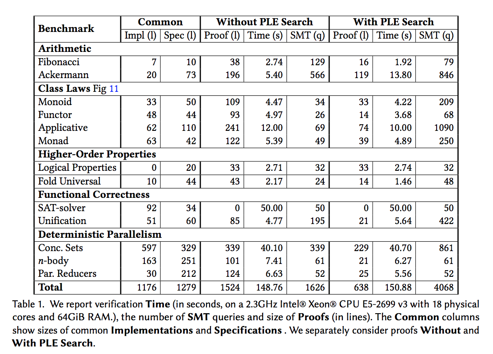

Refinement Reflection:
Complete Verification with SMT
Niki Vazou
(Univerisyt of Maryland)
Two Tends in Program Verification
- Type-Theory-based theorem provers (e.g., Coq and Agda)
- SMT-based verifiers (e.g., Dafny and F*)
Type-Theory-based theorem provers
Type level computation to reason about program properties.
Supply lemmata or rewrite hints to discharge proofs, ...
... even in decidable logics.
SMT-based verifiers
Automate the verification of programs over decidable theories.
Encode user-defined functions with universally-quantified axioms, ...
... using incomplete (i.e., unpredictable) heuristics for instantiation.
Predictable & SMT-automated Verification
GOAL: Alternative representation of user-defined functions ...
... for SMT-decidable (i.e., unpredictable) verification.
Refinement Reflection
Reflect function definition into its result refined type.
Consequence:
Value level function application is also ...
... "SMT" predictable function instantiation.
Outline
How far can we go?
Evaluation

Conclusion
Refinement Reflection and Proof by Logical Evaluation combined ...
... allow for complete verification with SMT-automation, but
... don't allow for user interaction,
... don't allow for proof certificates.
Thank you!
Refinement Reflection: Complete Verification with SMT
to appear in POPL 2018
- by Niki Vazou, Anish Tondwalker, Vikraman Choudhoury,
- Ryan Scott, Ryan Newton, Philip Wadler, and Ranjit Jhala